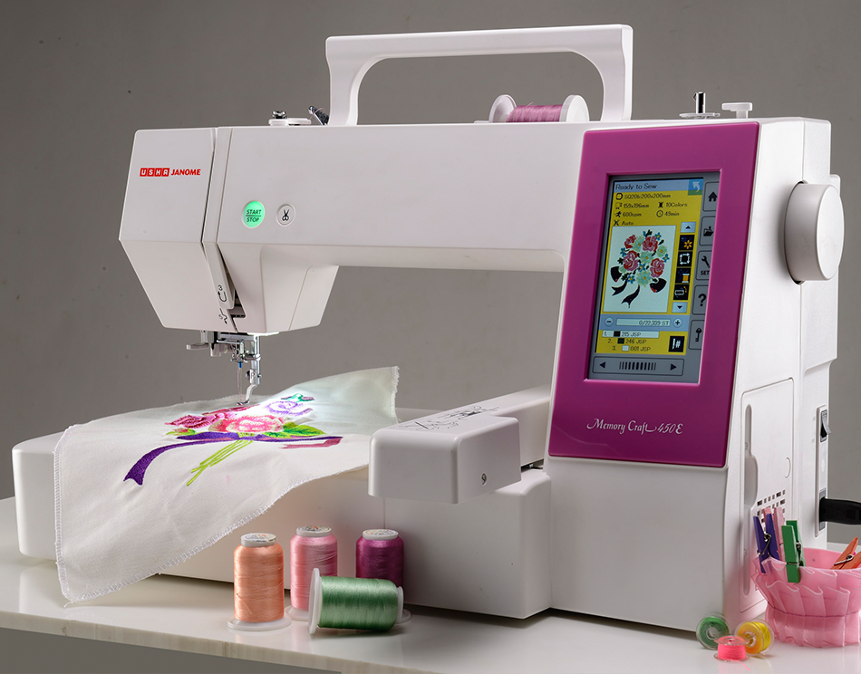
Usha Memory Craft 450E
Designed to handle demanding workloads without breaking a sweat, the MC450E delivers a blistering embroidery speed of 860 stitches per minute. Whether you are fulfilling bulk orders or intricate custom pieces, this machine ensures your boutique stays productive and ahead of schedule.
- Large Embroidery Area: Tackle bold, expansive designs up to 200 x 280 mm.
- Extra-Wide Extension Table: Provides the stability and space needed to support heavy garments and large-scale projects like linens or bridal wear.
- Precision Hooping: Includes two standard hoops—the RE28b (200 x 280 mm) and the SQ20b (200 x 200 mm).
- On-the-Fly Adjustments: Stay in total control with hoops that remain adjustable even after the embroidery process has begun.
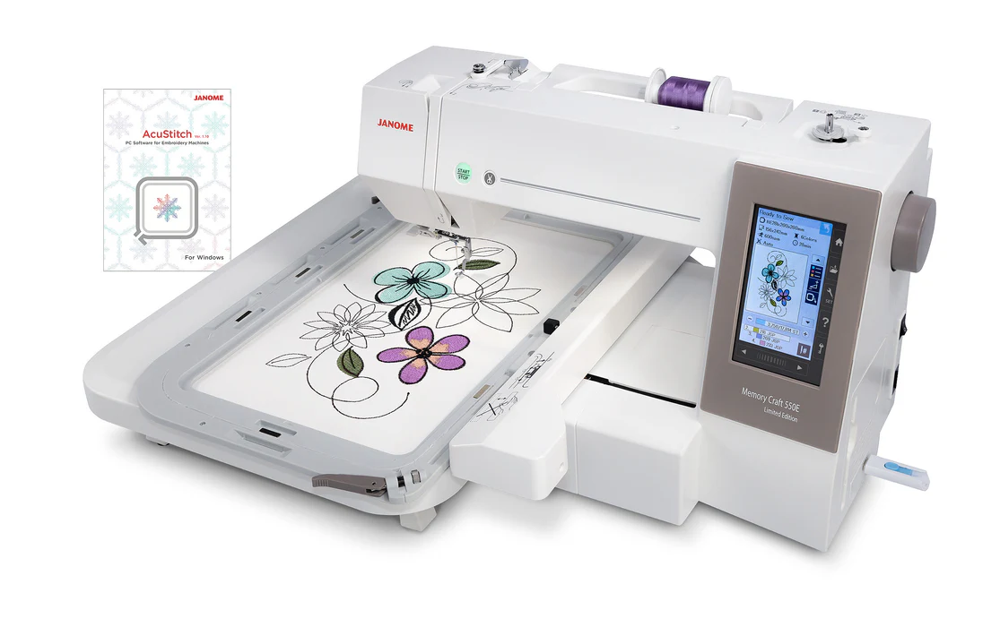
Usha Memory Craft 550E
Transform your creative vision into high-fashion reality with the Usha Memory Craft 550E. Engineered specifically for boutiques and small-scale fabricators, this high-tech, embroidery-only machine combines user-friendly operation with professional-grade versatility to help you produce head-turning ensembles.
- Expansive Library: Preloaded with 180 built-in designs and 6 monogramming fonts for instant creativity.
- On-Board Editing: A high-tech touchscreen allows for one-touch design access and direct on-machine editing.
- Dual-Platform Software: Includes Artistic Digitizer Jr, fully compatible with both Windows and iOS systems.
- Boutique Specialist: An embroidery-only machine designed to create head-turning ensembles for small fabricators.
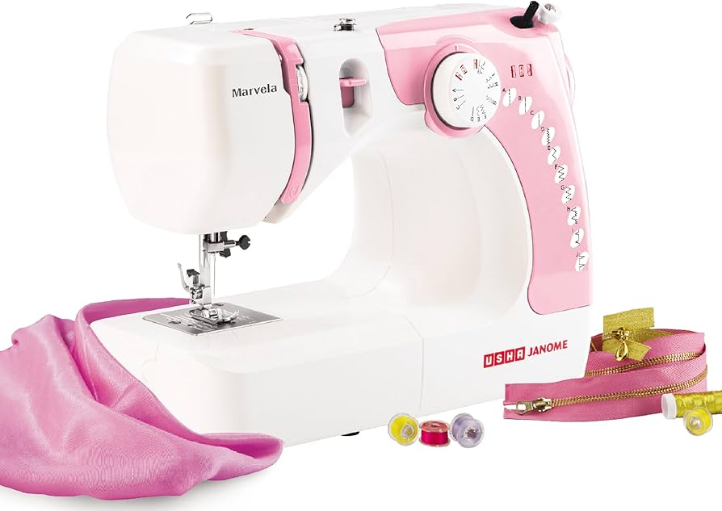
Marvella
Start your sewing journey with confidence using the Usha Marvela, the perfect entry-level machine designed for modern creators. Compact, lightweight, and featuring a built-in carry handle, this machine is as portable as it is capable, making it easy to sew wherever inspiration strikes.
- Portable Design: A compact, free-arm zigzag machine featuring a built-in handle for easy transport.
- Versatile Applications: Offers 7 built-in stitches and 7 applications, including quilting, smocking, and lace fixing.
- Beginner-Friendly Controls: Simplifies sewing with a single dial for pattern selection and a dedicated buttonhole stitch.
- Quilting Ready: Equipped with an extra-lift pressure foot to easily accommodate thick fabrics and layered quilts.

Allure Dlx
TThe Usha Allure is a versatile and user-friendly sewing machine designed to give your creative projects a professional edge. Combining precision with ease of use, it is the perfect companion for both garment construction and decorative home décor.
- Dual-Dial Precision: Features independent dials for both pattern selection and stitch length customization.
- Comprehensive Stitch Library: Boasts 13 built-in stitches and 9 specialized applications, including stretch stitching.
- Seamless Circular Sewing: The free-arm configuration ensures effortless stitching for sleeves, cuffs, and hems.
- Professional Finishing: Handles advanced tasks like zip fixing, satin stitching, and rolled hemming with ease.
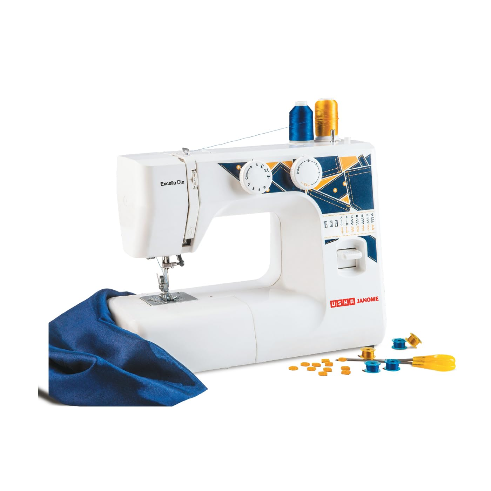
Excella Dlx
The Excella Deluxe is a feature-rich sewing machine designed for those who value convenience and precision. It blends modern automation with heavy-duty performance, making it an excellent choice for both everyday tailoring and creative free-motion embroidery.
- Effortless Setup: Features automatic needle threading to get you started in seconds without eye strain.
- Embroidery-Ready: The lever-type feed drop allows you to lower the feed dogs instantly for creative free-motion work.
- Superior Strength: Equipped with triple strength stitch capability to provide extra-durable seams on heavy fabrics.
- Versatile Stitch Library: Includes 13 built-in stitches, featuring a precision buttonhole stitch for professional finishes.
- Modern Conveniences: Built with an LED sewing light for clear visibility and a face plate thread cutter for quick, clean trimming.
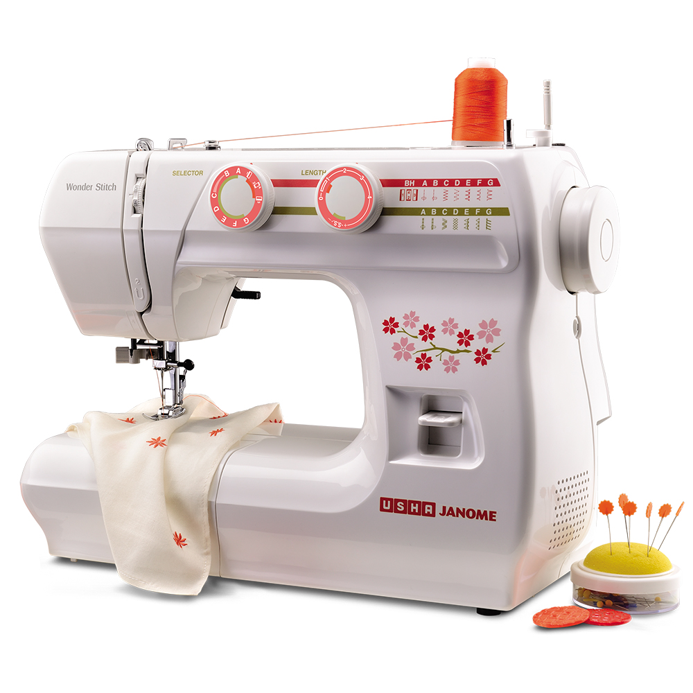
Wonder Stitch
The Wonder Stitch is as aesthetically pleasing as it is functional, offering a perfect blend of style and high-end performance. Designed with a robust set of automated features and a protective hard cover, this machine is a reliable companion for those looking to master everything from heavy-duty repairs to delicate decorative work.
- Automated Convenience: Features automatic needle threading to eliminate eye strain and get you sewing faster.
- Embroidery-Friendly: Equipped with a lever-type feed drop for effortless free-motion embroidery and creative monogramming.
- Superior Strength: Equipped with triple strength stitch capability to provide extra-durable seams on heavy fabrics.
- Versatile Stitch Library: Includes 13 built-in stitches, featuring a precision buttonhole stitch for professional finishes.
- Modern Conveniences: Built with an LED sewing light for clear visibility and a face plate thread cutter for quick, clean trimming.
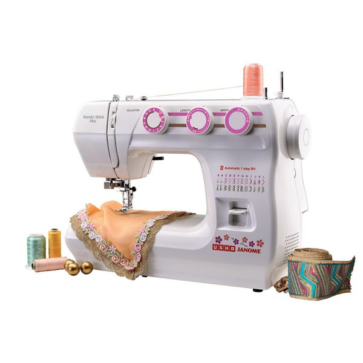
Wonder Stitch Plus
Unleash your creativity with the Wonder Stitch, a high-performance sewing machine designed to make professional-grade tailoring accessible for everyone. Wrapped in a stylish pink finish, this machine isn't just about looks—it’s a powerhouse of versatility, featuring 23 built-in stitches and an automatic needle threader to get you started in seconds.
- Precision Control: Three independent dials give you the freedom to fine-tune every stitch to your exact project requirements.
- 12 Diverse Applications: From stretch stitching and smocking to zip fixing and satin stitches, this machine handles a wide range of fabric techniques.
- SAutomatic Functionality: Save time and eye strain with the automatic needle threader and the one-step automatic buttonhole presser foot.
- Ergonomic Design: The built-in free arm makes sewing circular items like sleeves, cuffs, and trouser hems incredibly simple.
- Durability & Protection: Includes a premium hard cover to shield your machine from dust and impact when not in use.
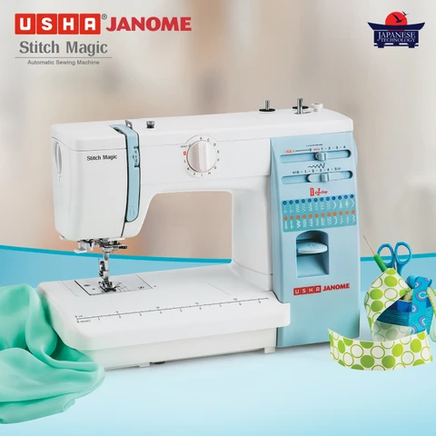
Stitch Magic
Experience the perfect blend of durability and creative flexibility with the Stitch Magic. Built with a rugged aluminum die-cast body, this machine provides the stability needed for high-speed sewing while remaining sleek and user-friendly. With 23 built-in stitches and a dedicated twin needle facility, the Stitch Magic is designed for those who want to push the boundaries of garment design and decorative crafting.
- Industrial-Strength Build: The aluminum die-cast frame reduces vibration, ensuring skip-free stitching and long-term durability.
- Total Fabric Control: The adjustable presser foot dial allows you to modify the "grip" on your fabric, preventing puckering or slipping.
- Double the Creativity: The twin needle facility allows you to sew two parallel rows of stitching simultaneously—perfect for decorative hems and professional finishes.
- 14 Professional Applications: Master complex tasks with ease, including rolled hemming, blind stitching, zip fixing, and stretch stitching.
- One-Step Precision: Create perfect buttonholes in a single step and thread your needle effortlessly with the integrated automatic threader.

Stitch Queen
The Stitch Queen is a heavy-duty flatbed zig-zag machine designed for those who value tradition, durability, and precision. Engineered for versatility, this machine is a favorite for specialized techniques like quilting and lace fixing. Unique in its flexibility, the Stitch Queen is available as a motorized unit or as a manual model compatible with a foot treadle, making it the perfect choice for areas with limited power access or for those who prefer the tactile control of a classic treadle.
- Versatile Power Options: Choose between a modern motor-driven setup or a traditional foot treadle configuration for sewing anywhere, anytime.
- Stable Flatbed Design: The expansive flatbed surface provides superior support for quilting, heavy garments, and large fabric pieces.
- 7 Professional Applications: Expand your repertoire with dedicated functions for lace fixing, quilting, rolled hemming, and more.
- Single-Touch Reverse: Secure your seams instantly with a conveniently located reverse stitch lever.
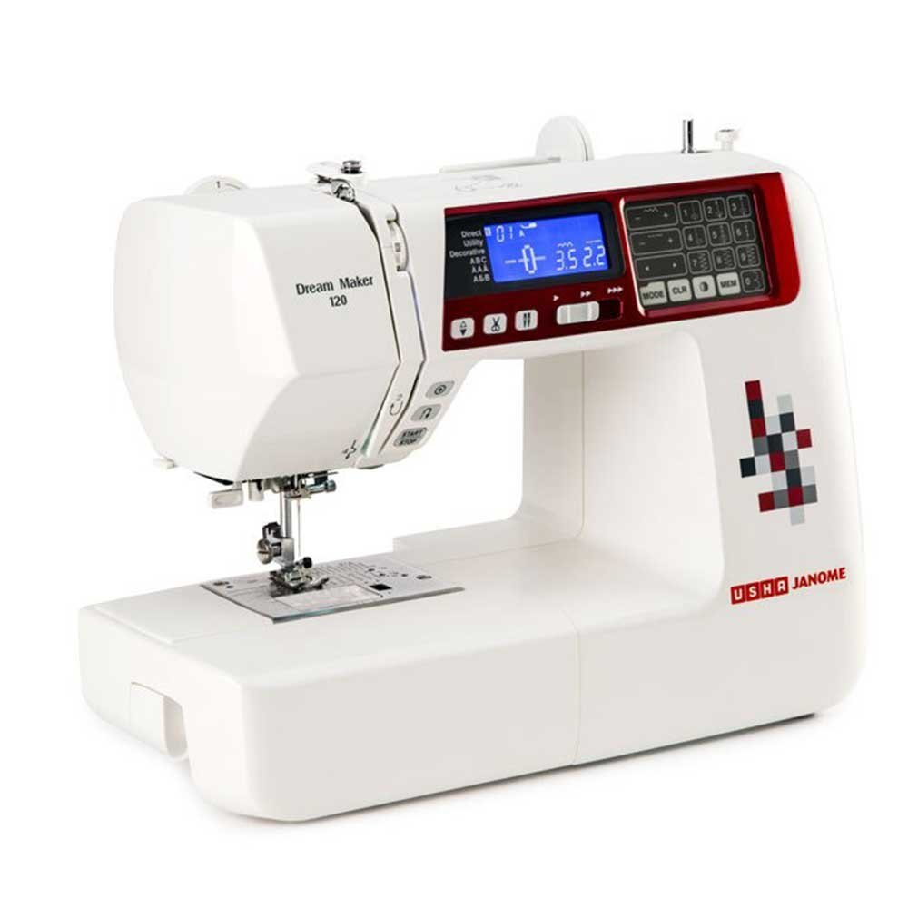
Dream maker 120
True to its name, the Dream Maker 120 turns your most ambitious creative visions into reality. This advanced computerized sewing machine is a favorite among enthusiasts and professionals alike, boasting a massive library of 120 built-in designs, including 7 distinct buttonhole styles and a sophisticated monogramming feature. Navigating your projects is effortless thanks to the innovative LCD screen, which allows for rapid stitch selection and mirrored editing. Whether you are quilting large-scale masterpieces or tailoring intricate garments, the Dream Maker 120 provides high-tech precision with every press of the button.
- 120 Built-In Designs: A vast library of decorative, utility, and alphabet patterns for personalized monogramming.
- Intelligent Navigation: An intuitive LCD screen offers direct stitch selection and "mirrored editing" to flip patterns for unique layouts.
- Custom Pattern Memory: Program and save up to 50 combination patterns to recall your favorite design sequences instantly.
- 1Superior Workflow: Features an automatic thread cutter and a programmable needle up/down memory to streamline your sewing process.
- Hands-Free Operation: Use the start/stop button and variable speed controller to sew comfortably without a foot pedal.
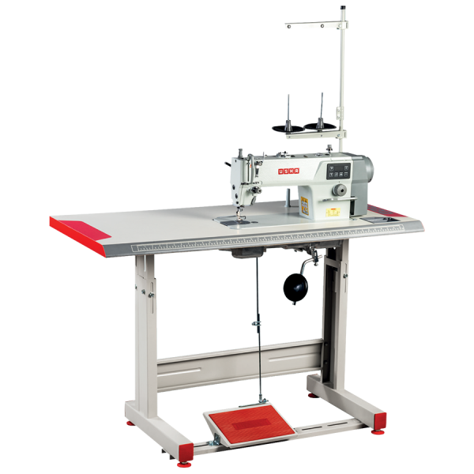
Usha Heavy Duty Industrial S2
The Usha S2 is a powerhouse in the world of industrial sewing, designed for those who demand speed without compromising on precision. This Single Needle Lockstitch machine features an integrated 550W Direct Drive motor, eliminating the need for bulky external belts and providing a quieter, more efficient workspace. Engineered for high-volume production, the S2 reaches impressive speeds of up to 5000 SPM (stitches per minute). Despite its power, it remains incredibly user-friendly with "Soft Start" technology that prevents thread breakage at high speeds and specialized needle positioning for intricate tailoring.
- Powerful Direct Drive Motor: The 550-watt motor features durable copper winding, ensuring long-lasting performance and significant energy savings.
- Rapid Production: Achieve maximum output with a top speed of 5,000 stitches per minute, perfect for industrial-scale projects.
- Smart Stitching Features: Use the Up/Down needle position memory for flawless cornering, collar stitching, and pocket attachment.
- Soft Start Technology: Automatically starts at a lower speed for the first few stitches to prevent thread snapping and ensure a secure seam.
- Half-Stitch Function: A dedicated button for single-stitch increments, allowing for extreme precision during detailed or finishing work.
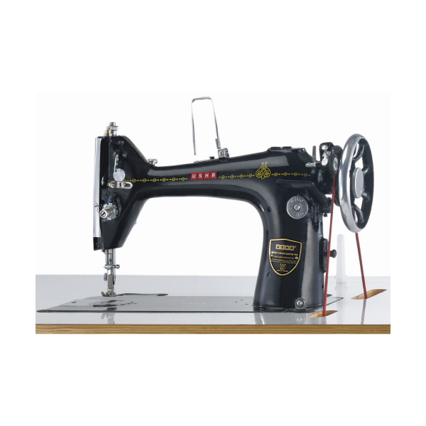
Usha RSM Pro
The RSM Pro is a high-speed, industrial-grade sewing machine engineered specifically for the toughest materials and high-volume production. Built for uncompromising durability, this machine operates at a rapid 1800 SPM (stitches per minute), making it a powerhouse for professional workshops and heavy-duty tailoring. Whether you are working with upholstery, canvas, or denim, the RSM Pro is designed to glide through up to 16 layers of denim with ease. Its specialized feed system and robust mechanical parts ensure consistent, neat stitches even across varying fabric thicknesses.
- Unmatched Penetration Power: Effortlessly sews through multiple folds and thick materials—capable of handling 16 layers of denim without missing a beat.
- Precision Engineering: Equipped with a Japanese hook shuttle option and a high-strength hook system for superior stitch formation and reliability.
- Smooth Fabric Handling: Features a specialized feed system and a custom-designed needle plate to ensure heavy fabrics move smoothly without bunching.
- Specialized Presser Foot: Optimized for thick fabrics, providing the necessary pressure for even stitching across layered seams.
- Enhanced Thread Control: Improved tension mechanisms deliver neat, uniform stitches, even at maximum industrial speeds.
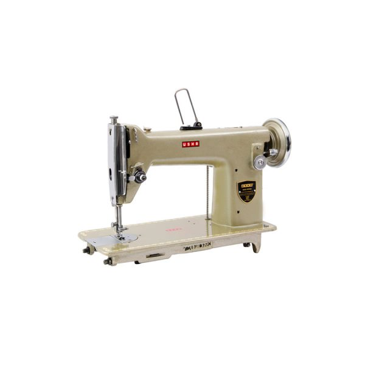
Usha Quick Stitch
The Quick Stitch Master combines a modern, professional aesthetic with industrial-grade performance. Featuring a striking silver metallic finish and a sturdy square-arm body, this machine is built to handle everything from delicate silks to heavy woolens with precision. Engineered for efficiency, it delivers speeds of up to 1800 SPM (stitches per minute). Its full rotary hook system ensures whisper-quiet, smooth operation, making it a reliable choice for high-volume tailoring and diverse fabric types.
- High-Speed Efficiency: Reach your production goals faster with a maximum speed of 1800 stitches per minute.
- Full Rotary Hook System: Experience snag-free, smooth stitching; also available with a premium Japanese Hook Shuttle for enhanced durability.
- All-Fabric Capability: Effortlessly switches between fine fabrics, heavy materials, and thick woolens without compromising stitch quality.
- Flexible Power Options: A true dual-drive machine—operate it manually with a traditional foot treadle or connect it to a motor for high-speed power.
- Ergonomic Knee Lifter: Increase your workflow speed by using the knee lifter for hands-free presser foot control, allowing you to keep your hands on the fabric at all times.
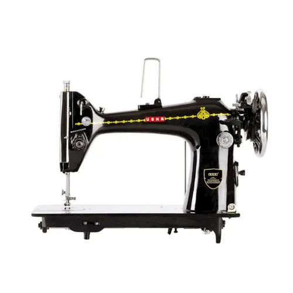
Usha RSM
The Rotary Stitch Master is engineered for high-output sewing, combining industrial speed with the versatility needed for a modern workshop. Designed to deliver a professional finish at 1800 SPM (stitches per minute), this machine ensures your projects are completed faster without sacrificing quality. At its core is a full rotary hook system that provides smooth, vibration-free operation, allowing you to transition effortlessly between delicate silks and rugged denims. Whether you prefer a traditional setup or a modern motorized workflow, the Rotary Stitch Master adapts to your sewing style.
- High-Speed Output: Maximize your productivity with a top speed of 1800 stitches per minute, perfect for professional tailoring and high-volume tasks.
- Full Rotary Hook System: Enjoy whisper-quiet, jam-free sewing; also available with a premium Japanese Hook Shuttle for enhanced precision and longevity.
- Versatile Fabric Range: Expertly handles everything from lightweight materials to heavy-duty fabrics like denim and canvas.
- Hands-Free Control: The integrated knee lifter allows you to raise the presser foot with your knee, keeping your hands free to guide and pivot the fabric accurately.
- Flexible Drive Options: Designed for ultimate adaptability—use it as a manual foot treadle machine or upgrade to a motorized setup for maximum power.
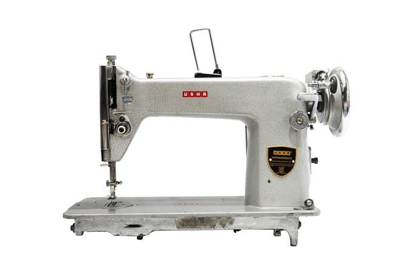
Craft Master Dlx
Craft Master Deluxe: Professional Precision in a Sturdy Build The Craft Master Deluxe is the perfect marriage of industrial-grade power and refined design. Featuring a sleek silver metallic finish and a robust square-arm body, this machine offers the stability required for high-speed sewing while maintaining a beautiful aesthetic. Engineered for high-output environments, it operates at a swift 1800 SPM (stitches per minute). With its full rotary shuttle and an adjustable stitch length of up to 4.2 mm, the Craft Master Deluxe provides the versatility needed to master everything from delicate silks to heavy woolens and denims.
- SIndustrial Speed & Strength: Achieve professional results faster with a top speed of 1,800 stitches per minute.
- Superior Stitch Control: A maximum stitch length of 4.2 mm allows for greater flexibility in seam construction and decorative topstitching.
- Full Rotary Shuttle: Equipped with a high-precision shuttle system for smooth, quiet operation and consistent thread tension.
- Hands-Free Operation: Includes a knee lifter, allowing you to manage fabric with both hands while adjusting the presser foot with your knee.
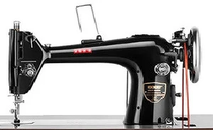
Craft Master
CA mainstay in the domestic industrial category, the Craft Master is the perfect solution for those who need professional-grade power in a versatile package. Proudly made in India, this machine features a timeless round-arm body with a classic black finish, offering both aesthetic appeal and the structural integrity required for high-speed sewing. With a rapid output of 1,800 SPM (stitches per minute) and a precision full rotary shuttle, the Craft Master delivers seamless, skip-free stitching. Whether you are working on delicate silks, heavy-duty trousers, or thick woolens, this machine is designed to handle a vast range of fabric weights with industrial efficiency.
- SIndustrial Speed & Strength: Achieve professional results faster with a top speed of 1,800 stitches per minute.
- Superior Stitch Control: A maximum stitch length of 4.2 mm allows for greater flexibility in seam construction and decorative topstitching.
- Full Rotary Shuttle: Equipped with a high-precision shuttle system for smooth, quiet operation and consistent thread tension.
- Hands-Free Operation: Includes a knee lifter, allowing you to manage fabric with both hands while adjusting the presser foot with your knee.
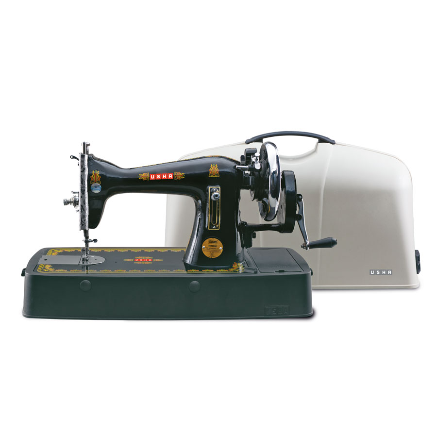
Usha Bandhan
The Bandhan Composite is a modern take on the beloved straight-stitch classic, designed to provide a seamless and user-friendly sewing experience. This ISI-marked machine is engineered with all the essential features needed for everyday tailoring, mending, and creative projects. Combining durability with precision, the Bandhan Composite features an auto-tripping, spring-loaded bobbin winder to ensure uniform thread distribution—a key secret to achieving perfect stitch formation every time. Whether you are a beginner or a seasoned home tailor, its intuitive controls make sewing a truly effortless task.
- Perfect Stitch Formation: The spring-loaded bobbin winder with auto-tripping ensures your bobbin is wound evenly, preventing thread jams and uneven tension.
- Seamless Stitch Regulation: Easily switch between forward and reverse stitching with the lever-type regulator, allowing for quick seam reinforcement and precise control.
- Adjustable Needle Pressure: Features a screw-type pressure adjustment system, giving you the ability to fine-tune the needle bar pressure based on the thickness of your fabric.
- Traditional Security: Built with a closed-type shuttle race to provide a stable and consistent stitching environment.
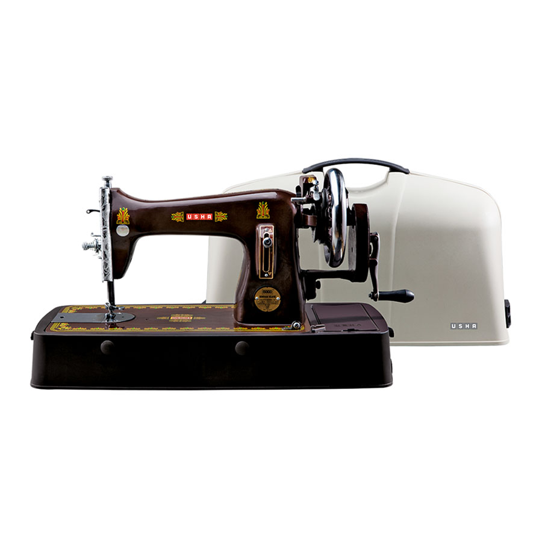
Usha Bandhan Dlx
The Bandhan Deluxe Composite combines a sophisticated aesthetic with the rugged durability needed for consistent home tailoring. Featuring a striking square-arm body and a unique rich brown tone, this machine adds a sleek, modern accent to any workspace while providing a stable, vibration-free sewing experience. This ISI-marked machine is built with precision in mind, featuring an auto-tripping, spring-loaded bobbin winder that ensures uniform winding—the foundation for flawless stitch formation. It is a perfect blend of form and function, designed to make everyday sewing projects both effortless and enjoyable.
- Perfect Stitch Formation: The spring-loaded bobbin winder with auto-tripping ensures your bobbin is wound evenly, preventing thread jams and uneven tension.
- Seamless Stitch Regulation: Easily switch between forward and reverse stitching with the lever-type regulator, allowing for quick seam reinforcement and precise control.
- Adjustable Needle Pressure: Features a screw-type pressure adjustment system, giving you the ability to fine-tune the needle bar pressure based on the thickness of your fabric.
- Traditional Security: Built with a closed-type shuttle race to provide a stable and consistent stitching environment. 🛒 Order Now
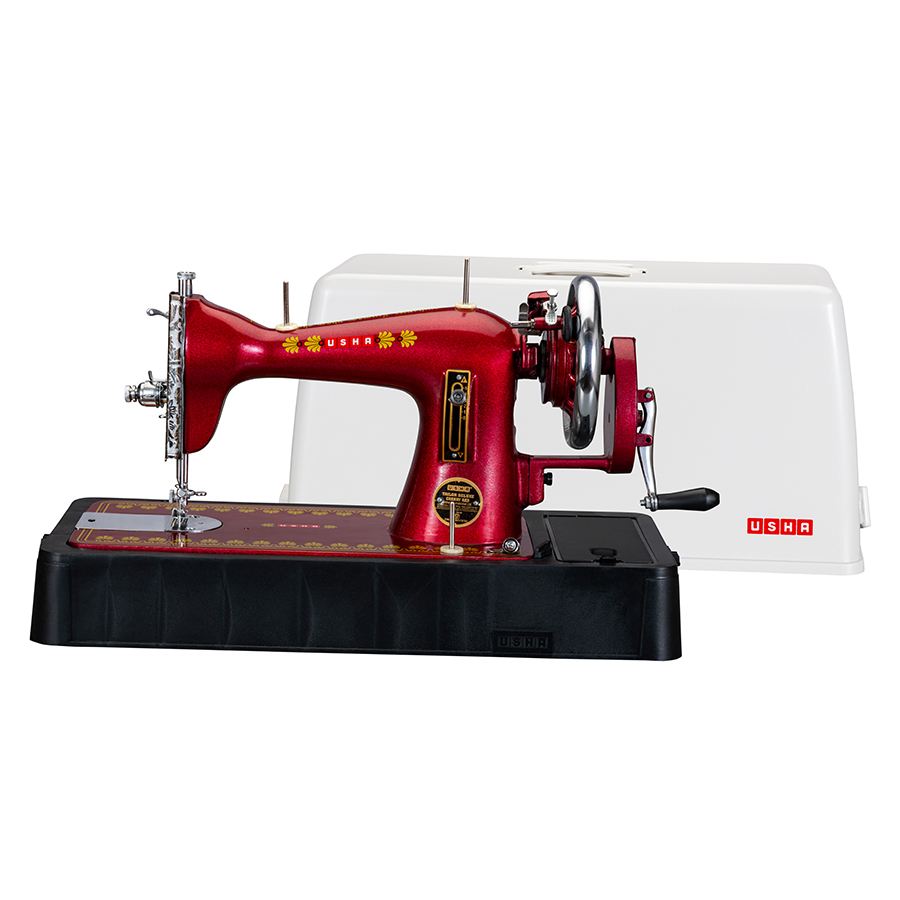
Usha Tailor Dlx Red
The Usha Tailor Deluxe Composite is the quintessential straight-stitch machine, trusted by professional tailors and home sewists alike for its rugged reliability and ease of use. This ISI-marked powerhouse is designed for high-performance garment construction, offering a stable and smooth sewing experience that delivers crisp, clean seams every time. Equipped with an auto-tripping, spring-loaded bobbin winder, this machine ensures that thread is distributed with perfect uniformity—preventing skips and ensuring flawless stitch formation. Its classic design and intuitive controls make it the "go-to" model for those who demand precision and durability in their daily work.
- Consistent Threading: The specialized spring-loaded bobbin winder prevents uneven tension by ensuring the bobbin is wound perfectly every time.
- Seamless Directional Control: Effortlessly toggle between forward and reverse stitching with the lever-type stitch regulator, ideal for securing seams and intricate maneuvers.
- Variable Fabric Control: Fine-tune the needle bar pressure with the manual screw-type adjustment, allowing the machine to adapt to both thin textiles and heavier materials.
- Effortless Maintenance: Features a convenient slide plate for quick bobbin insertion and removal, keeping your workflow uninterrupted.
- Industrial Standards: The ISI Mark ensures the machine meets strict quality and safety benchmarks for long-term industrial or domestic use.
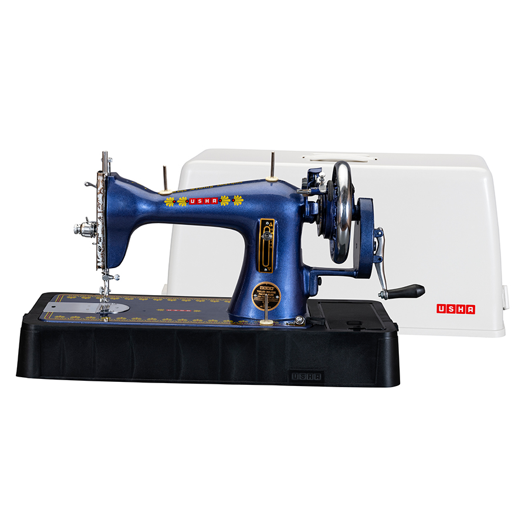
Usha Tailor Dlx Blue
The Usha Tailor Deluxe Composite is the quintessential straight-stitch machine, trusted by professional tailors and home sewists alike for its rugged reliability and ease of use. This ISI-marked powerhouse is designed for high-performance garment construction, offering a stable and smooth sewing experience that delivers crisp, clean seams every time. Equipped with an auto-tripping, spring-loaded bobbin winder, this machine ensures that thread is distributed with perfect uniformity—preventing skips and ensuring flawless stitch formation. Its classic design and intuitive controls make it the "go-to" model for those who demand precision and durability in their daily work.
- Consistent Threading: The specialized spring-loaded bobbin winder prevents uneven tension by ensuring the bobbin is wound perfectly every time.
- Seamless Directional Control: Effortlessly toggle between forward and reverse stitching with the lever-type stitch regulator, ideal for securing seams and intricate maneuvers.
- Variable Fabric Control: Fine-tune the needle bar pressure with the manual screw-type adjustment, allowing the machine to adapt to both thin textiles and heavier materials.
- Effortless Maintenance: Features a convenient slide plate for quick bobbin insertion and removal, keeping your workflow uninterrupted.
- Industrial Standards: The ISI Mark ensures the machine meets strict quality and safety benchmarks for long-term industrial or domestic use.
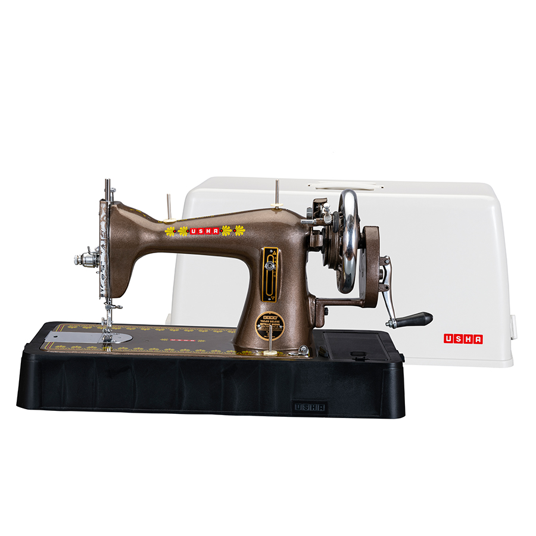
Usha Tailor Dlx Brown
The Usha Tailor Deluxe Composite is the quintessential straight-stitch machine, trusted by professional tailors and home sewists alike for its rugged reliability and ease of use. This ISI-marked powerhouse is designed for high-performance garment construction, offering a stable and smooth sewing experience that delivers crisp, clean seams every time. Equipped with an auto-tripping, spring-loaded bobbin winder, this machine ensures that thread is distributed with perfect uniformity—preventing skips and ensuring flawless stitch formation. Its classic design and intuitive controls make it the "go-to" model for those who demand precision and durability in their daily work.
- Consistent Threading: The specialized spring-loaded bobbin winder prevents uneven tension by ensuring the bobbin is wound perfectly every time.
- Seamless Directional Control: Effortlessly toggle between forward and reverse stitching with the lever-type stitch regulator, ideal for securing seams and intricate maneuvers.
- Variable Fabric Control: Fine-tune the needle bar pressure with the manual screw-type adjustment, allowing the machine to adapt to both thin textiles and heavier materials.
- Effortless Maintenance: Features a convenient slide plate for quick bobbin insertion and removal, keeping your workflow uninterrupted.
- Industrial Standards: The ISI Mark ensures the machine meets strict quality and safety benchmarks for long-term industrial or domestic use.
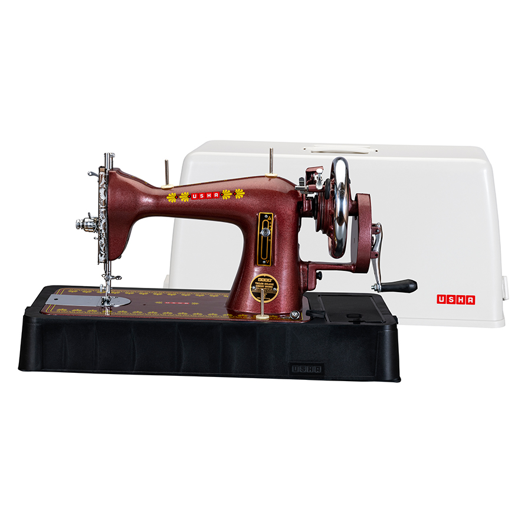
Usha Tailor Dlx cherry brown
The Usha Tailor Deluxe Composite is the quintessential straight-stitch machine, trusted by professional tailors and home sewists alike for its rugged reliability and ease of use. This ISI-marked powerhouse is designed for high-performance garment construction, offering a stable and smooth sewing experience that delivers crisp, clean seams every time. Equipped with an auto-tripping, spring-loaded bobbin winder, this machine ensures that thread is distributed with perfect uniformity—preventing skips and ensuring flawless stitch formation. Its classic design and intuitive controls make it the "go-to" model for those who demand precision and durability in their daily work.
- Consistent Threading: The specialized spring-loaded bobbin winder prevents uneven tension by ensuring the bobbin is wound perfectly every time.
- Seamless Directional Control: Effortlessly toggle between forward and reverse stitching with the lever-type stitch regulator, ideal for securing seams and intricate maneuvers.
- Variable Fabric Control: Fine-tune the needle bar pressure with the manual screw-type adjustment, allowing the machine to adapt to both thin textiles and heavier materials.
- Effortless Maintenance: Features a convenient slide plate for quick bobbin insertion and removal, keeping your workflow uninterrupted.
- Industrial Standards: The ISI Mark ensures the machine meets strict quality and safety benchmarks for long-term industrial or domestic use.
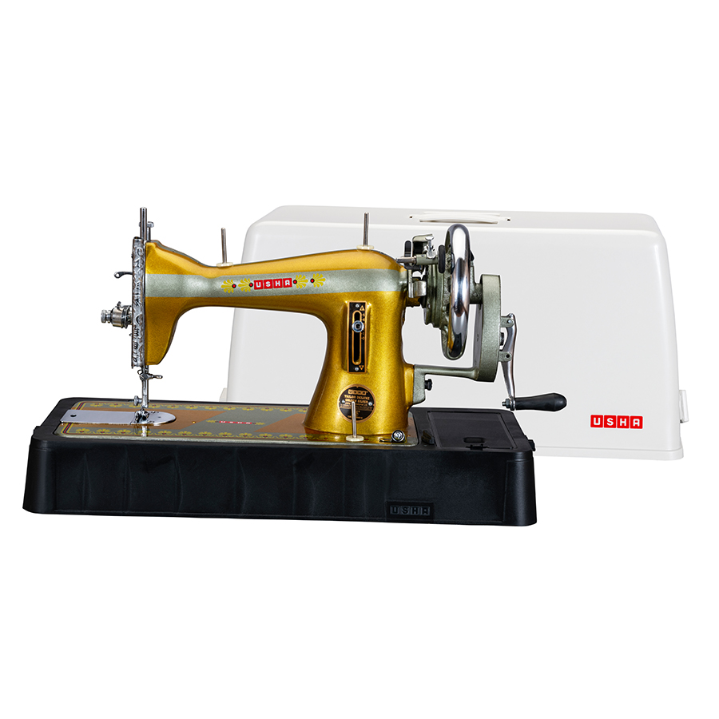
Usha Tailor Dlx Golden
The Usha Tailor Deluxe Composite is the quintessential straight-stitch machine, trusted by professional tailors and home sewists alike for its rugged reliability and ease of use. This ISI-marked powerhouse is designed for high-performance garment construction, offering a stable and smooth sewing experience that delivers crisp, clean seams every time. Equipped with an auto-tripping, spring-loaded bobbin winder, this machine ensures that thread is distributed with perfect uniformity—preventing skips and ensuring flawless stitch formation. Its classic design and intuitive controls make it the "go-to" model for those who demand precision and durability in their daily work.
- Consistent Threading: The specialized spring-loaded bobbin winder prevents uneven tension by ensuring the bobbin is wound perfectly every time.
- Seamless Directional Control: Effortlessly toggle between forward and reverse stitching with the lever-type stitch regulator, ideal for securing seams and intricate maneuvers.
- Variable Fabric Control: Fine-tune the needle bar pressure with the manual screw-type adjustment, allowing the machine to adapt to both thin textiles and heavier materials.
- Effortless Maintenance: Features a convenient slide plate for quick bobbin insertion and removal, keeping your workflow uninterrupted.
- Industrial Standards: The ISI Mark ensures the machine meets strict quality and safety benchmarks for long-term industrial or domestic use.
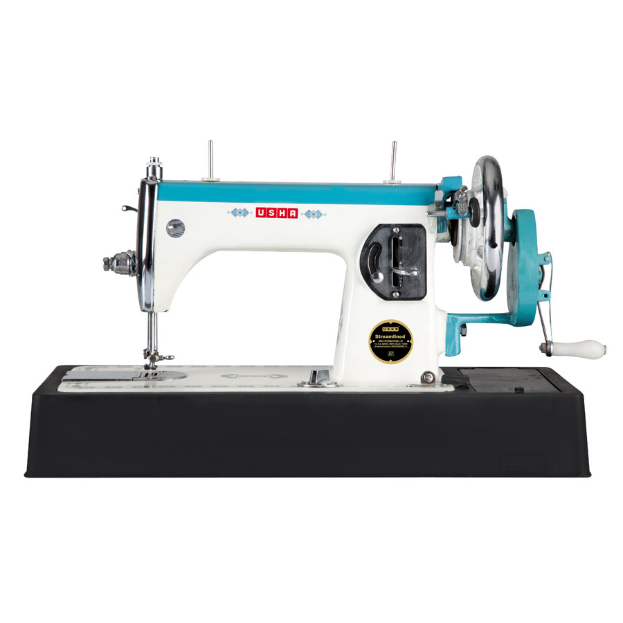
Usha StreamLine
TThe Streamlined sewing machine is a perfect blend of form and function, designed to make a statement in any sewing room. Its signature square-arm body provides exceptional stability, while the glossy dual-color finish gives it a sleek, modern look. Beyond its striking appearance, the Streamlined model is engineered for a superior user experience. It features an integrated sewing light to illuminate your workspace, ensuring maximum accuracy even during late-night projects. This ISI-marked machine combines industrial-grade durability with the intuitive features needed for seamless home tailoring.
- Precision Pressure Adjuster: Unlike standard machines, the Streamlined includes a dedicated pressure adjuster specifically calibrated for light, medium, and heavy fabrics, ensuring smooth feeding and preventing puckering.
- Integrated Sewing Light: Enhance your visibility with a built-in lamp that illuminates the needle area, allowing for high-precision stitching on dark or intricate fabrics.
- Uniform Stitch Formation: The auto-tripping bobbin winder ensures perfectly wound bobbins every time, resulting in consistent, professional-quality seams.
- Smooth Directional Control: A lever-type stitch regulator provides instant control over forward and reverse stitching, perfect for reinforcing seams effortlessly.
- Easy Maintenance: Designed with an open-type shuttle race, making cleaning and routine maintenance quick and simple.
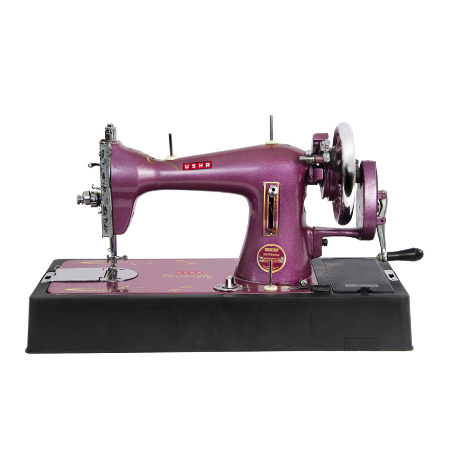
Usha Butterfly
The Butterfly sewing machine is the ultimate "beauty with brains," designed to stand out in any creative space. With its stunning metallic purple finish and sophisticated graphic transfers, it is as much a style statement as it is a professional tool. Beyond its striking exterior, the Butterfly is an ISI-marked powerhouse engineered for versatility. It features an automatic pressure adjuster and a specialized fabric selector, allowing you to switch between delicate silks, everyday cottons, and heavy-duty materials with zero guesswork. Whether you are tailoring a new outfit or exploring manual embroidery, this machine provides the precision and brains to match its beauty.
- Automatic Pressure Management: No manual tweaking required—the automatic pressure adjuster intuitively handles light, medium, and heavy fabrics for smooth, skip-free stitching.
- DPrecision Fabric Selector: Use the dedicated knob to adjust the feed dogs, making it simple to sew fine fabrics or lower them entirely for manual embroidery and free-motion work.
- Perfect Stitch Formation: The auto-tripping, spring-loaded bobbin winder ensures uniform thread distribution, which is the key to achieving professional, balanced stitches.
- Seamless Seam Control: A lever-type stitch regulator allows for instant forward and reverse control, making back-tacking and reinforcing seams effortless.
- User-Centric Design: Features a hinged needle plate for quick access to the bobbin and an open-type shuttle race for hassle-free cleaning and maintenance.
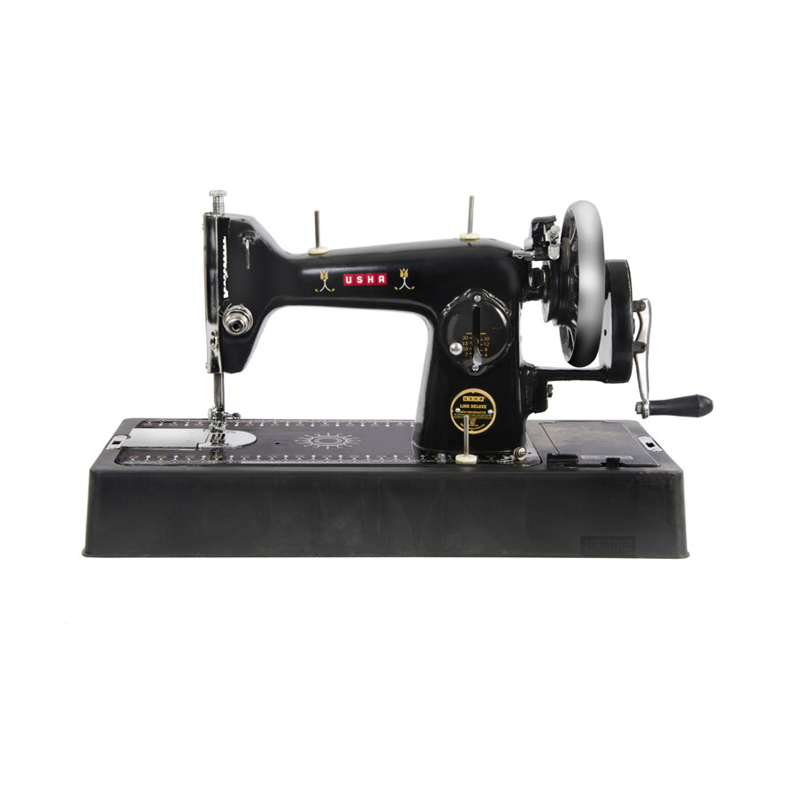
Usha Link Dlx
The Usha Link Deluxe is a high-performance straight-stitch machine designed for those who value both speed and tranquility. Engineered with an advanced link-motion mechanism, this machine delivers a whisper-quiet sewing experience, making it perfect for long hours of focused tailoring. Its modern square-arm body provides the structural integrity needed to maintain stability at high speeds, while its ISI mark guarantees the highest standards of safety and quality. Capable of reaching 1,000 SPM (stitches per minute), the Link Deluxe is a true efficiency booster for any professional or home-based workshop.
- Silent Link-Motion Technology: The specialized link mechanism ensures noiseless operation and a smoother mechanical feel compared to traditional models.
- High-Speed Productivity: Achieve professional output with a top speed of 1,000 stitches per minute, significantly increasing your project turnaround.
- Balanced Stitching: Features an auto-tripping, spring-loaded bobbin winder for uniform thread distribution, ensuring every stitch is perfectly formed.
- Precise Stitch Regulation: The round-type stitch regulator allows for intuitive control over stitch length and effortless reverse stitching for reinforced seams.
- Rugged Square-Arm Build: The sturdy, heavy-duty frame reduces vibration and ensures the machine stands up to years of continuous daily use.
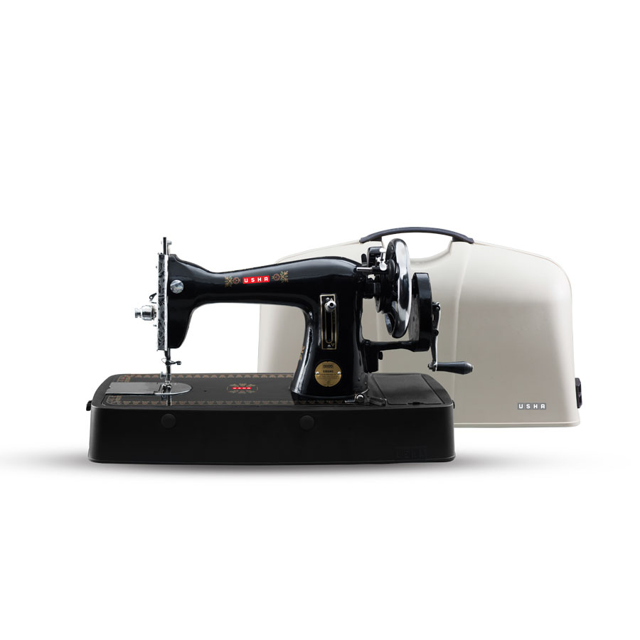
Usha Umang
The Usha Umang is a classic composite sewing machine designed to bring joy and efficiency to every home project. Combining a traditional soul with modern precision, this ISI-marked model is built for those who appreciate reliable, straightforward performance. From its auto-tripping bobbin winder that ensures perfect thread tension to its user-friendly maintenance features, the Umang is engineered for effortless sewing. Whether you’re mending a favorite garment or crafting something new, this machine offers a smooth experience that makes it a cherished addition to any household.
- Uniform Stitch Quality: The spring-loaded, auto-tripping bobbin winder ensures that thread is wound evenly, which is the secret to consistent and balanced stitch formation.
- Effortless Directional Control: A lever-type stitch regulator makes it simple to switch between forward and reverse stitching, allowing you to secure your seams with ease.
- Customizable Fabric Pressure: The screw-type pressure adjustment allows you to manually control the needle bar pressure, ensuring the machine handles different fabric thicknesses perfectly.
- The Ideal Hand Variant: Currently available as a hand-operated model, making it the perfect, meaningful gift for a loved one starting their sewing journey.
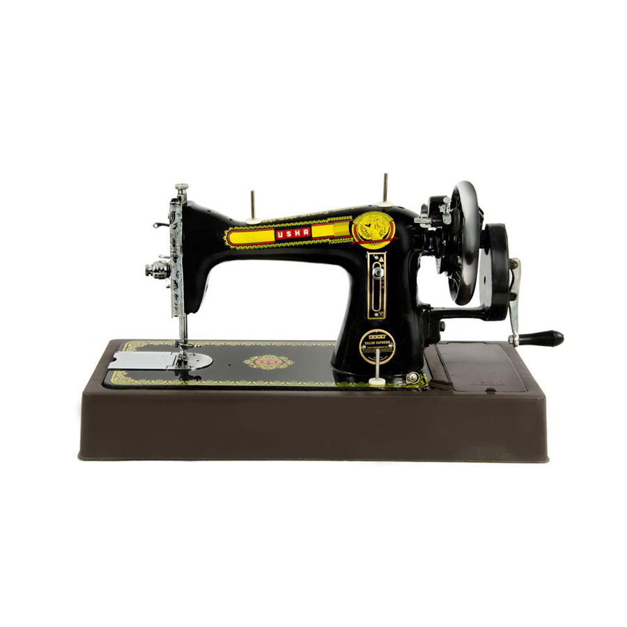
Usha Tailor Supreme
The Usha Tailor Supreme is an industrial-strength straight-stitch machine designed specifically to meet the high demands of professional tailoring. This ISI-marked model is a favorite for its rugged construction and precise mechanical control, ensuring that every garment—from formal wear to everyday repairs—is finished with professional excellence. Built for heavy-duty daily use, the Tailor Supreme features an auto-tripping, spring-loaded bobbin winder for uniform thread tension and a specialized pressure adjustment system, making it a versatile tool for any tailoring shop or home-based business.
- T
- Uniform Stitch Quality: The spring-loaded, auto-tripping bobbin winder ensures that thread is wound evenly, which is the secret to consistent and balanced stitch formation.
- Effortless Directional Control: A lever-type stitch regulator makes it simple to switch between forward and reverse stitching, allowing you to secure your seams with ease.
- Customizable Fabric Pressure: The screw-type pressure adjustment allows you to manually control the needle bar pressure, ensuring the machine handles different fabric thicknesses perfectly.
- The Ideal Hand Variant: Currently available as a hand-operated model, making it the perfect, meaningful gift for a loved one starting their sewing journey.
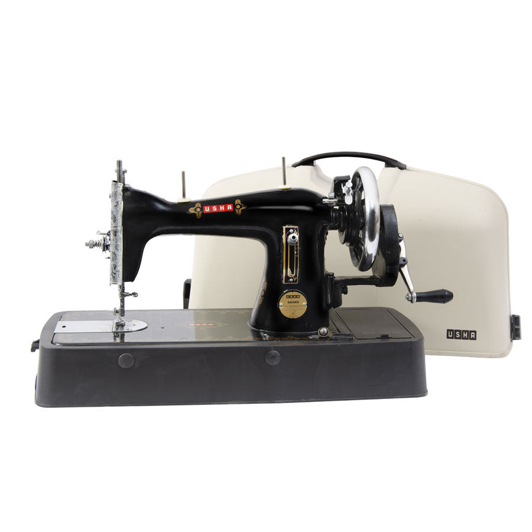
Usha Anand
The Usha Anand is an industrial-strength straight-stitch machine designed specifically to meet the high demands of professional tailoring. This ISI-marked model is a favorite for its rugged construction and precise mechanical control, ensuring that every garment—from formal wear to everyday repairs—is finished with professional excellence. Built for heavy-duty daily use, the Tailor Supreme features an auto-tripping, spring-loaded bobbin winder for uniform thread tension and a specialized pressure adjustment system, making it a versatile tool for any tailoring shop or home-based business.
- T
- Uniform Stitch Quality: The spring-loaded, auto-tripping bobbin winder ensures that thread is wound evenly, which is the secret to consistent and balanced stitch formation.
- Effortless Directional Control: A lever-type stitch regulator makes it simple to switch between forward and reverse stitching, allowing you to secure your seams with ease.
- Customizable Fabric Pressure: The screw-type pressure adjustment allows you to manually control the needle bar pressure, ensuring the machine handles different fabric thicknesses perfectly.
- The Ideal Hand Variant: Currently available as a hand-operated model, making it the perfect, meaningful gift for a loved one starting their sewing journey.
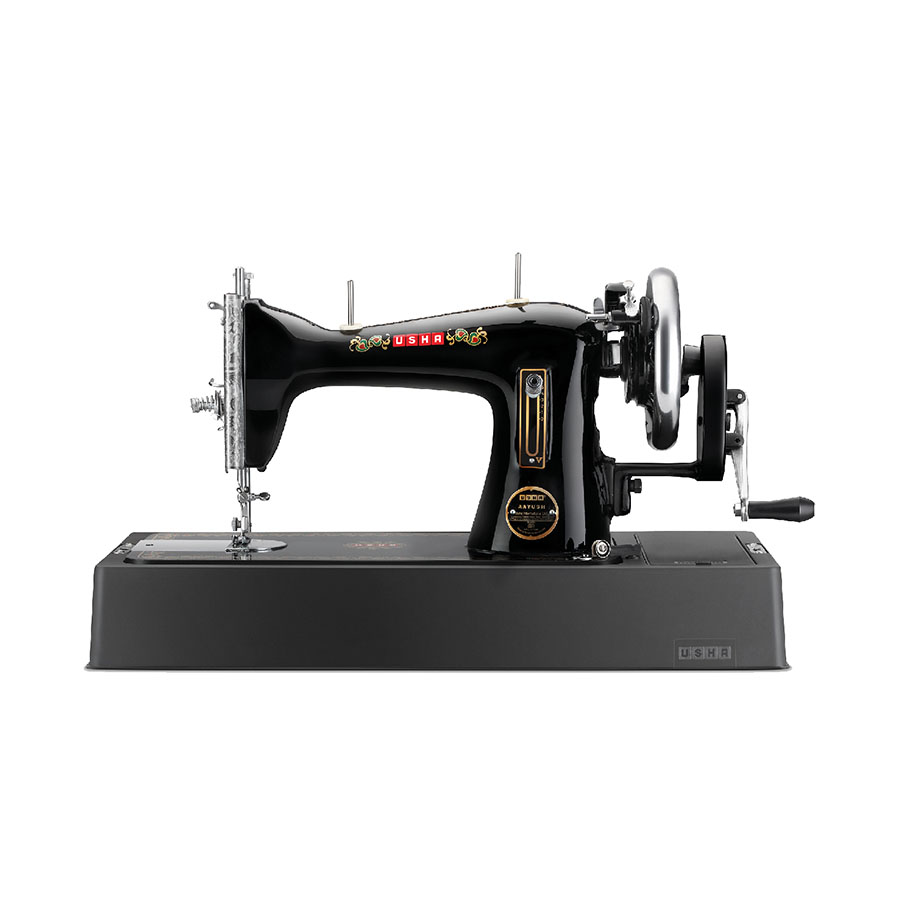
Usha Ayush
The Ayush sewing machine is one of the most budget-friendly options in the straight-stitch category, making it the ideal choice for those who need a dependable machine for everyday household tasks. Designed to deliver all the essential features for basic stitching, it provides a cost-effective solution without compromising on the quality of the stitch. Whether you are mending clothes, stitching simple garments, or working on school projects, the Ayush ensures a smooth experience. Its auto-tripping, spring-loaded bobbin winder guarantees uniform thread distribution, which is the foundation of perfect, skip-free stitch formation.
- T
- Uniform Stitch Quality: The spring-loaded, auto-tripping bobbin winder ensures that thread is wound evenly, which is the secret to consistent and balanced stitch formation.
- Effortless Directional Control: A lever-type stitch regulator makes it simple to switch between forward and reverse stitching, allowing you to secure your seams with ease.
- Customizable Fabric Pressure: The screw-type pressure adjustment allows you to manually control the needle bar pressure, ensuring the machine handles different fabric thicknesses perfectly.
- The Ideal Hand Variant: Currently available as a hand-operated model, making it the perfect, meaningful gift for a loved one starting their sewing journey.